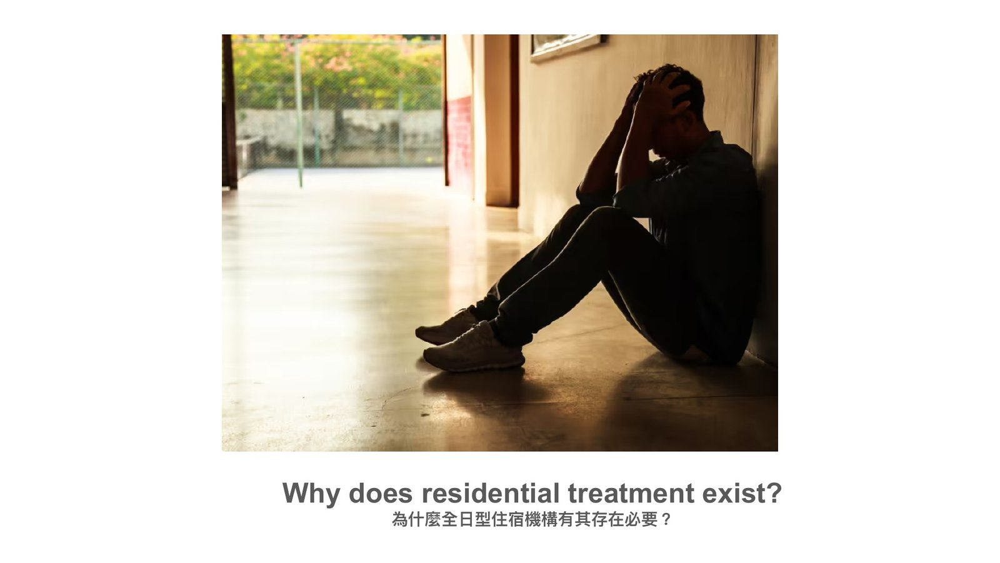
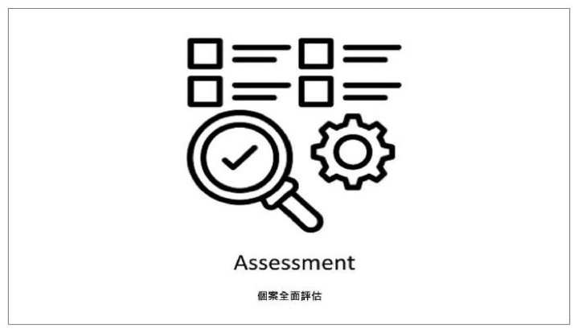
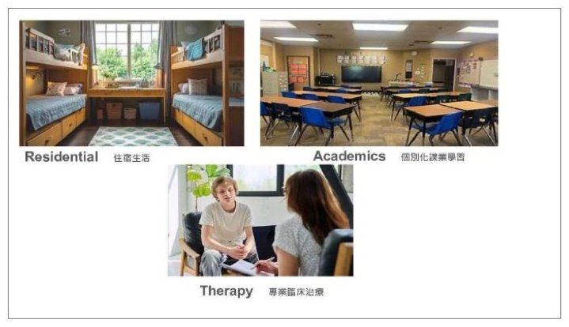
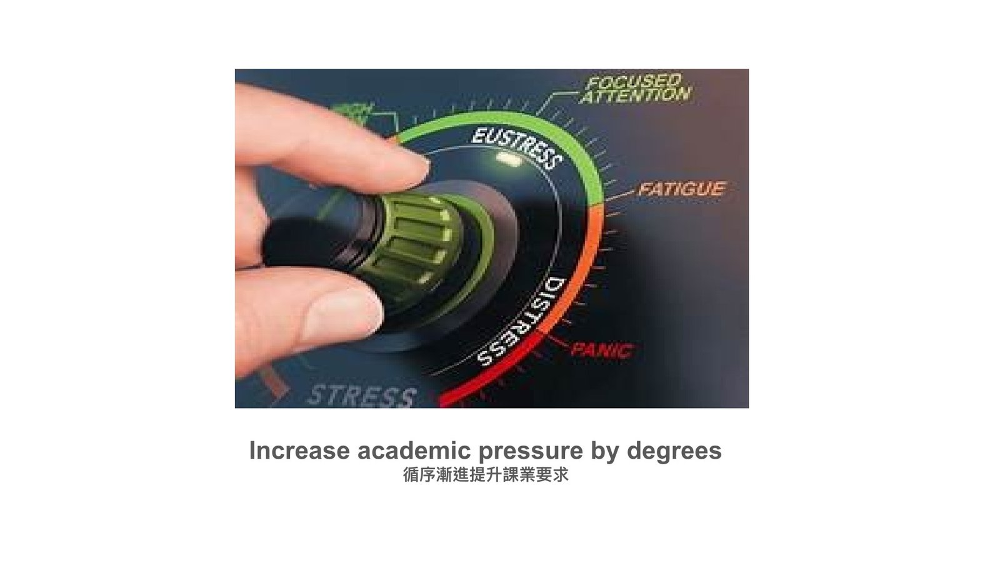
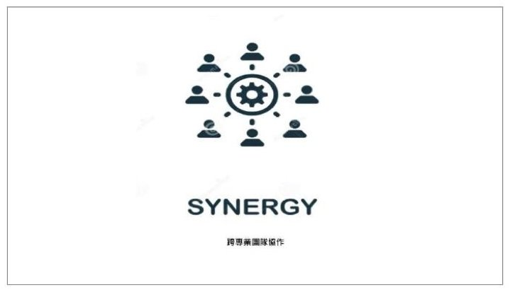

第 6 場・
住宿型治療機構的日常運作與照護實務
A Day in the Life of Residential Treatment
Barry Fell
美國猶他州 Telos 北校區執行總監
住宿型治療不是整天坐在治療室，而是把一整天的生活都做成治療。
Barry Fell 請聽眾想像自己是一個 16 歲男孩，帶大家過完在 Telos 的一週。從轉介、評估到宿舍、教室、體能訓練與週末服務，一路走到結束治療。他也當場問，為什麼台灣還沒有這樣的機構。
- 本場錄音從講者帶全場做的有獎小測驗開始，開頭第一句話沒有錄到。
- 本場沒有錄到聽眾提問，因此沒有問答整理。
重點整理
01不是整天坐在治療室

- 多數人一聽到住宿型治療，想像的是青少年整天坐在治療室裡；講者說事實與此相去甚遠。
- 住宿型治療真正的內容是過生活：每一小時、每一餐、每一堂課、每一次成功與失敗都是治療的一部分。
- 門診一週一次對某些青少年不夠用，因為他們在家、在學校、在朋友之間、在情緒上都同樣辛苦。
- 如果每一個環境都在加劇問題，那麼每一個環境就都必須成為解方的一部分。
Residential treatment is really about living life.
本盟譯住宿型治療真正的內容，是過生活。
02先確認適不適合

- 學生的轉介來源有四種：私人教育顧問、學區、其他治療機構，以及自己上網找上門的家庭。
- 收到轉介不等於收人：機構會花上好幾個小時、甚至一週，在電話上確認這個學生適不適合。
- 評估最重要的資訊來自學生本人與父母，沒有人比他們更清楚這個年輕人是怎麼長大的。
- 通常要三到五週，資訊才足夠到可以開始擬定並執行一份有意義的治療計畫。
…assessment isn't simply something we do to a student…
本盟譯評估不是我們單方面對一個學生做的事。
03一起生活，就有教材

- 每家住宿型機構都有住宿、學業與臨床治療三大核心服務，講者比喻成凳子的三隻腳，一隻弱掉整張就倒。
- 每棟宿舍平均約 10 名學生，大約每 4 名學生配 1 名工作人員，目標不是看管學生，而是認識他們。
- 住宿輔導員同時是老師、教練、榜樣、危機處理者與衝突調解人，這個環境 24 小時不睡。
- 學生情緒爆發不是麻煩而是教材；這些可以教的時刻很少發生在治療室，而在早餐、家事、作業與衝突的當下。
Someone has to teach them how to live together.
本盟譯總得有人教他們怎麼一起生活。
04教室、體能與週末

- 班級平均只有 6 名學生，課表每天只上四門課、每節約 80 分鐘，為的是減少一天之內的轉換次數。
- 學校刻意降低課業的量但不降低期待：先教組織、規劃、時間管理與情緒調節，能力長好了才提高要求。
- 本機構的特色是神經體適能，學生每季挑戰鐵人三項、馬拉松或長程單車，訓練的不只是身體，是大腦。
- 週末不是拿掉休閒而是重新定義休閒；週五是服務日，講者說服務別人是自我中心最健康的解藥之一。
05什麼時候結束，誰讓他改變

- 每週都有個別治療、家庭治療與團體治療；家長不是來探視治療，而是來參與治療。
- 結束治療的標準不是住滿幾個月或保險到期，而是治療目標實質達成、症狀下降、適應行為增加。
- 出院後最長 60 天，家庭可以和一位銜接專員合作，因為回家可能比大家想的更難。
- 講者說沒有哪一個部門最關鍵：住宿發現、學業確認、臨床探究、護理評估，每一個觀察都算數。
For up to 60 days after discharge, the family can work with an aftercare specialist
本盟譯出院之後最長六十天，家庭可以和一位銜接專員一起工作。
現場問答
本場沒有錄到聽眾提問，因此沒有問答整理。
帶走的一句
Residential provides hundreds of teachable moments every week
本盟譯住宿生活每一週都製造出數百個可以教的時刻。